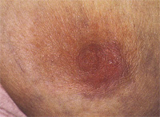
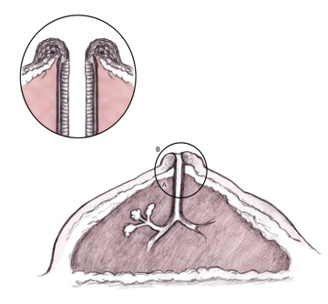

What is Paget’s disease of the nipple
• eczematous change in skin of nipple
due to ductal adenocarcinoma infiltrating
into the epidermis of nipple
What is the demography of Paget’s disease of the nipple
Pathology
• Almost all are associated with an
underlying malignancy (10% DCIS)
- hypothesises that ductal cells migrate along basement
membrane into nipple epidermis.
Malignant Paget
cells are derived from luminal lactiferous ductal epithelium
(A) of breast tissue with retrograde extension of cancerous
Paget cells into epidermis of overlying nipple (B).
Enlarged circle shows details that reveal thickening both of
lining epithelium of breast duct and of nipple skin
- Associated with Paget’s cells (large cells with
pale cytoplasm and prominent nucleoli) in the epidermis of the
nipple


Symptoms
- burning, itching, change in sensation.
- raised irregular scaling erythematous nipple
What is the Ix and treatment for Paget’s disease
of the nipple
• Begin with detailed mammographic examination with magnified views of the subareola region
USS breast and axilla
Confirm diagnosis with core biopsy or wedge biopsy of nipple
• total mastectomy with axillary sampling – suitable for women with diffuse disease or disease
at a distance from nipple.
- often in combination with radioRx, but little evidence as
rare.
• DCIS?
--> WLE of nipple and underlying ducts an option when disease localized to
subareolar area or nipple areola complex
--> mastectomy if extensive DCIS.